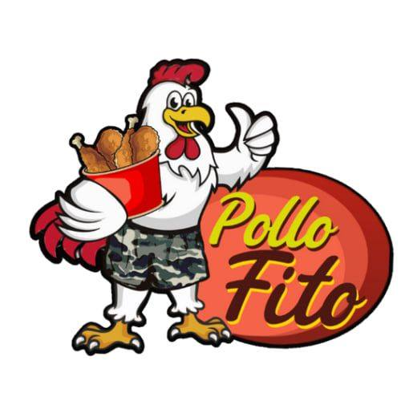

My Projects
Here you will find a selection of projects I’ve developed, from complex systems to small useful tools.

FitoMenu
Management system for restaurants with digital menus, ordering and kitchen panel.